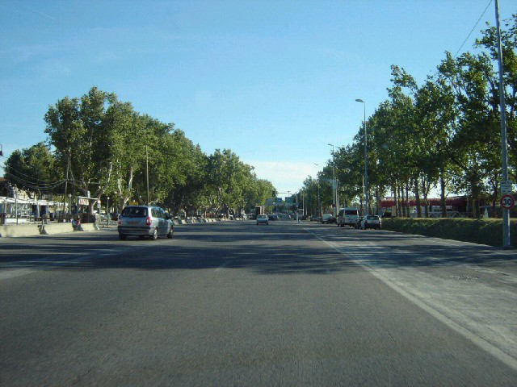
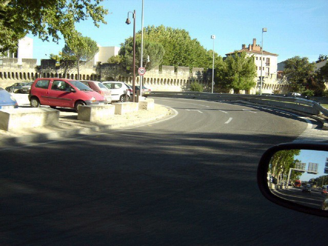
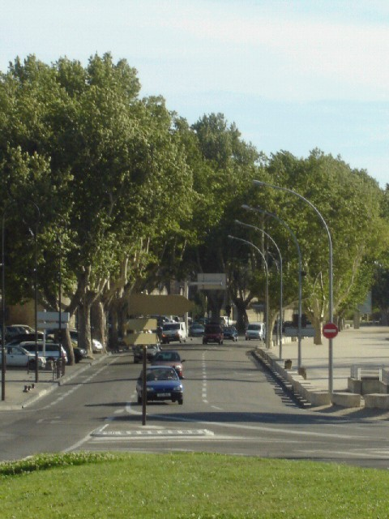
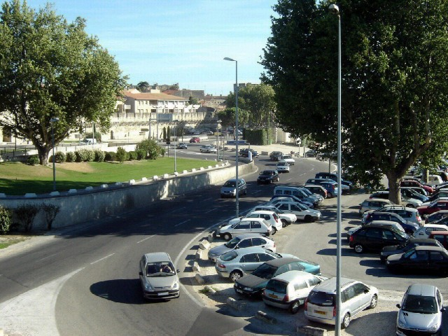
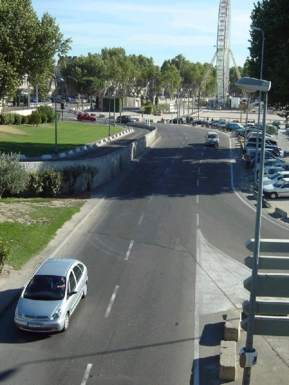
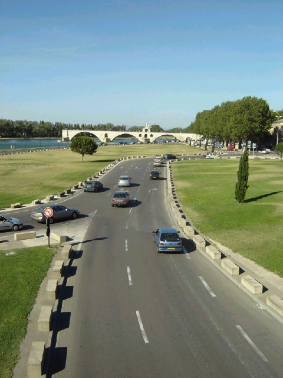
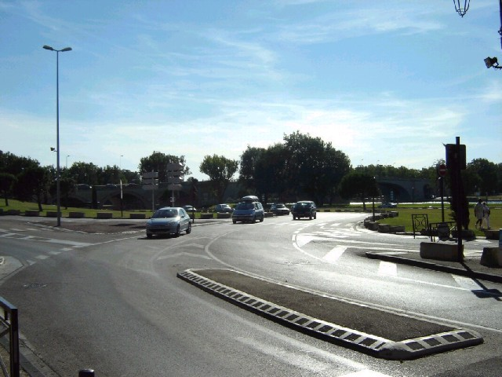
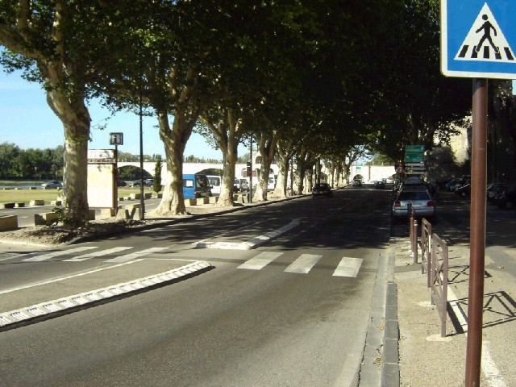
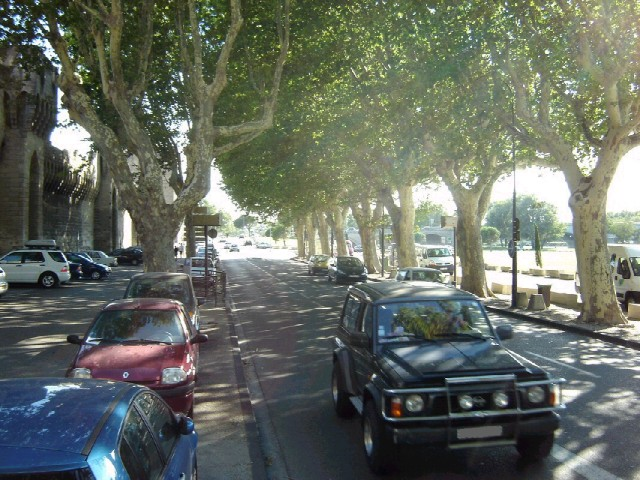

Numbers on the map represent the location where the photographs were taken. Click hyperlinks above to view the photographs.
Avignon |
Page 1 of 2 |
|| Contents || Page 1 (#01-#09) | Page 2 (#10-#17) || Home ||
Numbers on the map represent the location where the photographs were taken. Click
hyperlinks above to view the photographs.

01 - Just before start/finish.

02 - The first corner, a sharp left.

03 - After the first corner, a straight
behind the paddock.

04 - After the straight a left-right
combination.

05 - After the straight a left-right
combination.

06 - After the left-right combination, a
right-left combination.

07 - Looking back to the right-left
combination.

08 - Coming out of the right-left
combination.

09 - Looking back just before the sharp left
corner.
Return to racingcircuits.net's Photo Archive Main Index
©2005 Roelard Smit. Reproduced here with kind permission.